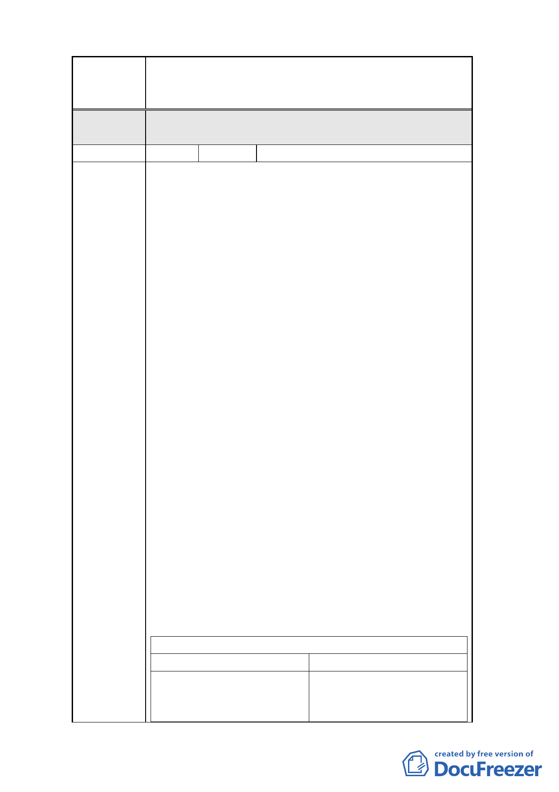

案名
編號
陳情理由
一
變更臺北市南港車站特定專用區部分特定商業區及
部分體育場用地為道路用地暨修訂土地使用管制規
定計畫案
模應依決議辦理，部分文字誤繕應予更正外，其餘
依市府公展計畫書圖內容通過。
3 陳情人 龍巖人本服務股份有限公司
依「變更台北市南港車站特定專用區部分特定商業
區及部分體育場用地土地為道路用地暨修訂特定商
業區土地管制規定計畫案」之土地使用分區管制規
定：特定專用區﹙A﹚之建蔽率由原計畫之 60﹪擬修
訂為 40﹪，同時在都市設計管制要點修訂﹙五﹚建
築物管制：計畫區內特定商業區﹙A﹚之建築物高度
以不超過 80 公尺為原則，並增加限制建築物高度 15
公尺以上部份之連續牆面線不得大於 65 公尺及建築
物棟距不得小於 20 公尺的規定，目的是為鼓勵建築
量體間留設更寬裕之棟距及避免建築量體及連續性
過大致遮蔽山景。但以建蔽率 40﹪，容積率 436﹪，
高度限制 80 公尺之條件，如以原法定容積加上時程
獎勵、開放空間設計獎勵及建築技術規則允許免計入
容積﹙陽台梯廳及機電空間等﹚計算後之容積作為建
築設計及法規檢討之依據，本計畫之商業建築如於地
面層規劃一至二層建築量體底座設計作為商業使用
時，因需留設合理且必要之公共設施空間，若允建建
蔽率只有 40﹪，將難以提供合理的商業基座空間使
用需求，再者在建築物棟距 20 公尺與高度 80 公尺規
定之雙重限制下，想有效完全使用允建之總容積樓地
板面積實有困難，所以陳情放寬本計畫建築物高度限
制至”以不超過 110 公尺為原則”，將建築物高度限
制之條件再予提高實有必要，如此亦有助於增進都市
天際線之變化，而維持建築物棟距 20 公尺之規範，
實有利於整體視覺穿透性與減少山景之遮蔽作用。整
體而言，本計畫之開發興建應以形塑其成為此地區商
務中心的環境與建築意象為目標。
建蔽率 40％與建蔽率 60％之比較
建蔽率 40％
建蔽率 60％
一、容積率分析：
一、容積率分析：
1.容積率 436％
1.容積率 436％
2.開發時程獎勵（區段徵收完 2.開發時程獎勵（區段徵收完
7